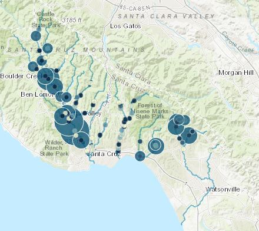

The Juvenile Salmonid and Stream Habitat (JSSH) database includes monitoring data of salmonid density and stream habitat characteristics in four watersheds in Santa Cruz County, California. Data have been collected every fall since 1994, with one survey available in 1981. Salmonid data include steelhead density in two size classes and presence/absence of Coho salmon. Additional presence/absence data are available for select species of fish, amphibians, and reptiles. Stream morphometry, riparian, and bed characteristics are measured in each reach separately for pools, runs, or riffles. All data have been combined in a geodatabase with spatially referenced information for each survey.
Analysis of the JSSH Database (see here) is driven by the following questions:
What is the status and trends of the steelhead and coho populations in these four watersheds?
Where do fish and wildlife species occur in these four watersheds?
What are stream habitat conditions in these four watersheds?
How can information about the steelhead and coho salmon populations and stream habitat conditions inform conservation and restoration efforts?
The analysis will be exploratory to address the general questions and to provide information for follow-up analysis. Our approach will begin by addressing each question in sequence as a means to address the final question. Unless noted otherwise, all analyses will be separate for each watershed. The tabs above link to each step described below.
Salmonid status and trends: Comparison of status and annual trends in salmonid density by size class and individual sites
Community analysis: Community analysis of each watershed using species presence/absence early and later in the time series
Habitat analysis: Analysis of habitat differences between riffle, runs, and pools, changes over time
Community and habitat analysis: Multivariate analysis of association between habitat measurements and community composition early and later in the time series
Variable importance: Linear or additive modelling of salmonid density to identify important habitat variables
All site content and analyses by Marcus Beck. Raw data collected and graciously provided by the JSSH monitoring program in Santa Cruz County, California. Click the icon on the top left to view the web page source content.